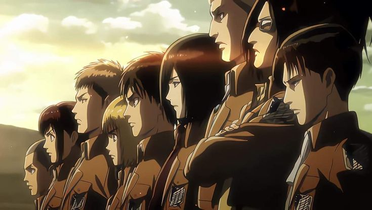

Disponivel apenas em:

Baseado no mangá japonês de Hajime Isayama, Ataque dos Titãs é um anime ambientado em um mundo distópico afetado há centenas de anos por colossais titãs, gigantes com aparências humanoides com um desesperado instinto por carne humana. Quase exterminada por esse ataque, a humanidade se protegeu em cidades e vilarejos rodeados por enormes muros, ultrapassando a força e tamanho do maior titã já visto. No anime, conhece-se a história do jovem Eren, que tem sua vida afetada para sempre após um ataque surpresa de um titã colossal acontecer. Sem ver um titã há mais de 100 anos, a cidade é surpreendida após perder suas barreiras de proteção e ver titãs de diversos tamanhos matando todos pelo caminho. Eren e sua irmã adotiva Mikasa acabam sendo alvos dessa horrível situação ao verem sua mãe ser mastigada em sua frente por um titã. Jurando vingança, e alimentando o ódio pelos titãs, Eren se junta à elite Survey Corps, um grupo de soldados que luta contra os Titãs. Em sua jornada de treinamentos com os melhores da Survey, Eren finalmente tem a chance de lutar contra os Titãs ao mesmo tempo em que investiga a origem e a misteriosa história deles.